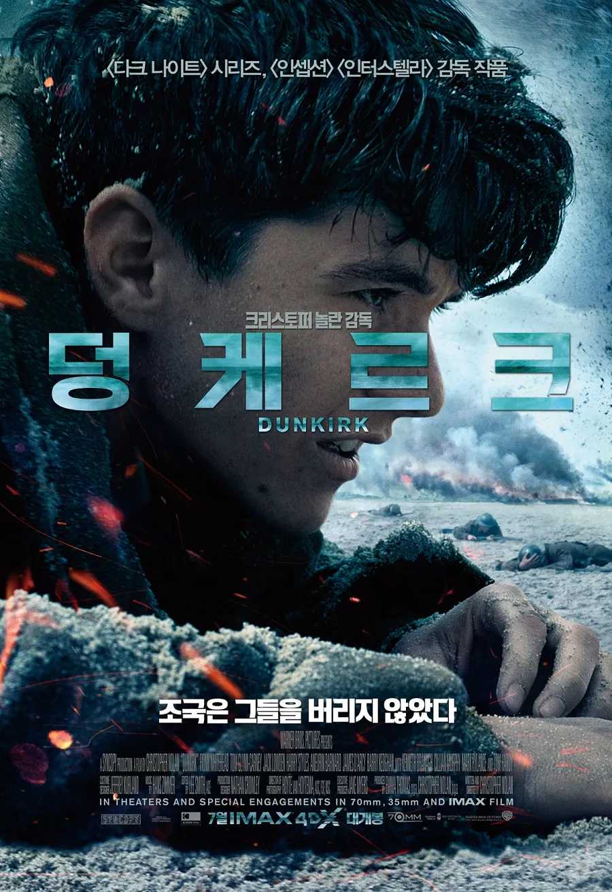

| 순위 |
제목 |
포스터 |
줄거리 |
바로가기 |
| 1 |
다크나이트(2008) |
 |
정의로운 지방 검사 ‘하비 덴트’, ‘짐 고든’ 반장과 함께 범죄 소탕 작전을 펼치며 범죄와 부패로 들끓는 고담시를 지켜나가는 ‘배트맨’ 그러던 어느 날, 살아남기 위해 발버둥치던 범죄 조직은 배트맨을 제거하기 위해 광기어린 악당 ‘조커’를 끌어들이고 정체를 알 수 없는 조커의 등장에 고담시 전체가 깊은 혼돈 속으로 빠져든다. 급기야 배트맨을 향한 강한 집착을 드러낸 조커는 그가 시민들 앞에 정체를 밝힐 때까지 매일 새로운 사람들을 죽이겠다 선포하고 배트맨은 사상 최악의 악당 조커를 막기 위해 자신의 모든 것을 내던진 마지막 대결을 준비한다. |
예고편 |
| 2 |
덩케르크(2017) |
 |
해변: 보이지 않는 적에게 포위된 채 어디서 총알이 날아올지 모르는 위기의 일주일 바다: 군인들의 탈출을 돕기 위해 배를 몰고 덩케르크로 항해하는 하루 하늘: 적의 전투기를 공격해 추락시키는 임무, 남은 연료로 비행이 가능한 한 시간 “우리는 해변에서 싸울 것이다. 우리는 상륙지에서 싸울 것이다. 우리는 들판에서 싸우고 시가에서도 싸울 것이다. 우리는 끝까지 싸울 것이다” |
예고편 |
| 3 |
센과 치히로의 행방불명(2001) |
 |
금지된 세계의 문이 열렸다! 이사 가던 날, 수상한 터널을 지나자 인간에게는 금지된 신들의 세계로 오게 된 치히로.. 신들의 음식을 먹은 치히로의 부모님은 돼지로 변해버린다. “걱정마, 내가 꼭 구해줄게…” 겁에 질린 치히로에게 다가온 정체불명의 소년 하쿠. 그의 따뜻한 말에 힘을 얻은 치히로는 인간 세계로 돌아가기 위해 사상 초유의 미션을 시작하는데… |
예고편 |
| 4 |
조커(2019) |
 |
고담시의 광대 아서 플렉은 코미디언을 꿈꾸는 남자. 하지만 모두가 미쳐가는 코미디 같은 세상에서 맨 정신으로는 그가 설 자리가 없음을 깨닫게 되는데… 이제껏 본 적 없는 진짜 ‘조커’를 만나라! |
예고편 |
| 5 |
더 리더: 책 읽어주는 남자(2008) |
 |
10대 소년 마이클은 우연히 30대 여인 한나를 만나 사랑에 빠진다. 마이클이 책을 읽어주는 것을 좋아하던 한나는 어느 날 홀연히 자취를 감춘다. 한나에 대한 그리움을 간직하고 살아가던 마이클은 법대생이 되어 8년 후 우연히 피의자 신분으로 법정에 선 한나를 보게 된다. 무기징역을 선고 받은 한나와 또 다시 20년의 이별을 맞아야만 한다. 그 후 10년간 한나에게 책을 읽은 녹음 테이프를 보내면서 인연의 끈을 놓지 않으려 한다. 하지만 인생을 송두리째 흔들어 놓은 사랑은 너무나 큰 비밀을 감추고 있었는데… |
예고편 |